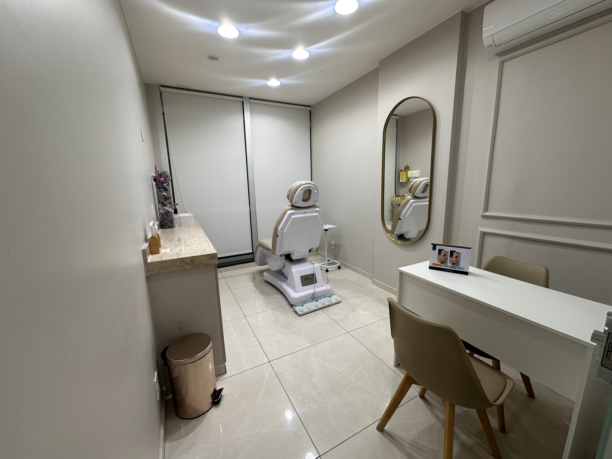
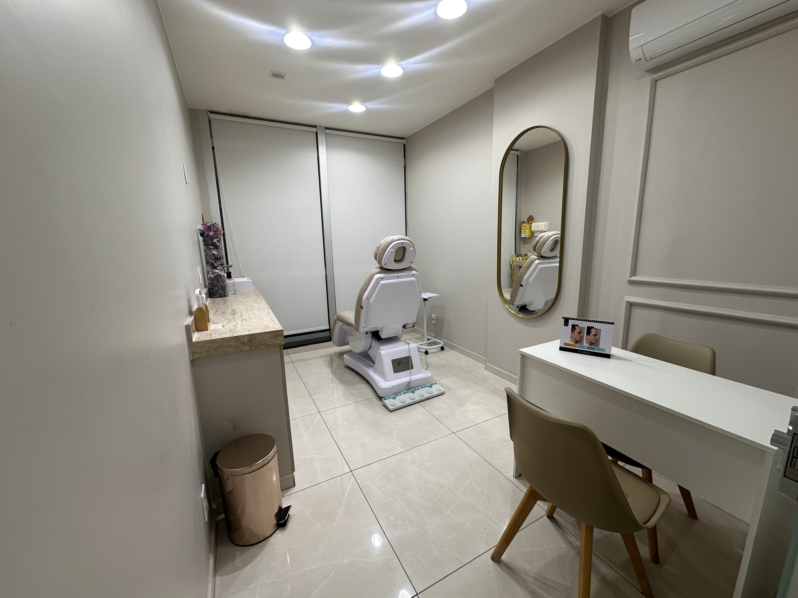

Sobre Nós
Profissionais
Dra. Luana
Sou cirurgiã-dentista formada em 2017 pela Universidade Católica de Brasília. Ao longo da minha trajetória, em 2021, concluí a especialização em ortodontia. Apesar da importância dessa formação, percebi que não era ali que meus olhos vibravam.
Foi na harmonização facial que encontrei propósito, paixão e sentido no cuidar. Em 2022, finalizei minha residência em Harmonização Facial pelo Instituto Face Lab, consolidando uma prática baseada em técnica, naturalidade e respeito à individualidade de cada rosto.
Acredito que harmonizar vai muito além de procedimentos: é escutar, entender histórias, desejos e inseguranças. Meu diferencial está no olhar atento, no cuidado com cada detalhe e na construção de resultados que realçam a beleza sem tirar a essência de quem está na minha frente.
Dr. Otavio
Sou cirurgiã-dentista formada em 2017 pela Universidade Católica de Brasília. Ao longo da minha trajetória, em 2021, concluí a especialização em ortodontia. Apesar da importância dessa formação, percebi que não era ali que meus olhos vibravam.
Foi na harmonização facial que encontrei propósito, paixão e sentido no cuidar. Em 2022, finalizei minha residência em Harmonização Facial pelo Instituto Face Lab, consolidando uma prática baseada em técnica, naturalidade e respeito à individualidade de cada rosto.
Acredito que harmonizar vai muito além de procedimentos: é escutar, entender histórias, desejos e inseguranças. Meu diferencial está no olhar atento, no cuidado com cada detalhe e na construção de resultados que realçam a beleza sem tirar a essência de quem está na minha frente.

Dra. Sheila
Sou cirurgiã-dentista formada em 2017 pela Universidade Católica de Brasília. Ao longo da minha trajetória, em 2021, concluí a especialização em ortodontia. Apesar da importância dessa formação, percebi que não era ali que meus olhos vibravam.
Foi na harmonização facial que encontrei propósito, paixão e sentido no cuidar. Em 2022, finalizei minha residência em Harmonização Facial pelo Instituto Face Lab, consolidando uma prática baseada em técnica, naturalidade e respeito à individualidade de cada rosto.
Acredito que harmonizar vai muito além de procedimentos: é escutar, entender histórias, desejos e inseguranças. Meu diferencial está no olhar atento, no cuidado com cada detalhe e na construção de resultados que realçam a beleza sem tirar a essência de quem está na minha frente.
Fotos da Clínica
 

Localização
Sobre a Empresa
A SOLT nasceu com o propósito de realçar a beleza natural por meio de cuidados
personalizados, tecnologia de ponta e um atendimento humanizado. Acreditamos que estética
vai além da aparência: é autoestima, bem-estar e confiança.
Nossa clínica oferece procedimentos modernos e seguros, sempre realizados por profissionais
qualificados, em um ambiente acolhedor e pensado para proporcionar conforto em cada detalhe.
Na SOLT, cada paciente é único — e o cuidado também.